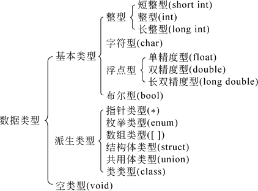

我们知道， 所有信息都可以被表达为 0 和 1 。 问题是， 我们如何区分 "字符" 和 "整数" 这两个不同的数据呢？
这就牵涉到 数据描述 和 数据处理。
数据的描述 (Data Types)
利用 “数据类型(data type)” 去把信息描述为计算机可以接受的数据类型。只有正确地标记了 “类型”， 计算机才能正确地解读 输入数据(input data)。 一个反例是 JavaScript， 其类型系统非常混乱，有时候计算机可能并不能正确地解读输入数据.
Why Strong-type is Good?
Example 1: JavaScript By comparing their sequences of UTF-16 code units values, even though the type is clearly integer. see from here.
const array1 = [1, 30, 4, 21, 100000];
array1.sort();
console.log(array1);
// expected output: Array [1, 100000, 21, 30, 4]
Example 2: C++
#include <iostream> // std::cout
#include <algorithm> // std::sort
#include <vector> // std::vector
using namespace std;
int main() {
int arr[] = {1, 30, 4, 21, 100000};
int n = sizeof(arr) / sizeof(arr[0]);
std::vector<int> myvector (arr, arr+n);
// using default comparison (operator <):
std::sort (myvector.begin(), myvector.begin()+n);
cout << "\nArray after sorting using default sort is : \n";
for (int i = 0; i < n; ++i)
cout << myvector[i] << " ";
return 0;
}
// expected output: Array [1 4 21 30 100000]
以上例子说明了， 为什么强类型是好的。
Type Conversion
类型之间的转换需要打醒十二分精神。
Example 3: what's wrong?
PNG createSpotlight(PNG image, int centerX, int centerY) {
for (unsigned x = 0; x < image.width(); x++) {
for (unsigned y = 0; y < image.height(); y++) {
HSLAPixel & pixel = image.getPixel(x, y);
double distX = x - centerX;
double distY = y - centerY;
double dist = std::sqrt(distX*distX + distY*distY);
if (dist < 160){
pixel.l = pixel.l * (1 - dist*0.005);
}else{
pixel.l = pixel.l * 0.2;
}
}
}
return image;
}
注意到 x 和 centerX 分别属于不同的类型。
而且还是 x 属于 unsigned int, 而 centerX 属于 signed int.
如果你看 CSAPP 的话，就会明白 unsigned int 用的普通 representation, 而 signed int 是用 two's complement 。 这两者的差别非常大， 所以在运算之前， 十分注意 unsigned int 是否被显式地被转换成 signed. 例如
double distX = (float)x - centerX;
double distY = (float)y - centerY;
还可以进一步了解一下 Two's Complement 的界限。 例如两个正数的 加法 或者 积 的结果为负数。这是超过了值的表示范围了。
通用性
但你可能会注意到 强类型系统 的弱点: Reusability 。例如只是普通的加法， 你就要写一堆的实现。 这是非常痛苦的。
double addition(int a, int b);
double addition(double a, int b);
double addition(int a, double b);
double addition(double a, double b);
double addition(float a, int b);
...
这将会通过 Generic 或者 是 Template 解决。
Generic
如果你感兴趣可以看一看 TypeScript Generic 的 type variable 。 这 Generic 的函数调用时， 需要显式地 explcitly 说明 T 到底是什么。
function addition<T>(a: T, b: T): T {
return a + b;
}
在调用的时候 (一般是 runtime)
let output = addition<number>(1, 2);
然后 微软的开发者文档 说 “Generic 和 Template” 有区别。。。。
Generics and templates are both language features that provide support for parameterized types. However, they are different and have different uses. This topic provides an overview of the many differences.
最大的区别是 Generic 是 runtime substituted (可以看上面的调用例子)， 而由于 C++ 需要先编译， 所以 Template 一般是 Templates are specialized at compile time。 这个会造成很多不同的影响， 详见微软的开发者文档.
Template
作为强类型语言，C++ 要求所有变量都具有特定类型，由程序员显式声明 (explcitly specify the type of a variable)。 在使用上 和 Generic 非常类似， 细节在之后会详细说明。 其能够让不同的数据类型都使用相同的算法。
C++ introduces generic programming, via the so-called template. You can apply the same algorithm to different data types.
Example :
A template addition<T> for a generic function with a single type parameter T
template <typename T, typename U, typename V>
V addition(const T& a, const U& b){
return a + b;
}
假如你要调用这个函数（当然你可以用让 typename 被替换substituded 为其他类型），
int a = 10;
int b = 19;
int c = addition<int, int, int>(a, b);
STL
在C++标准中，STL被组织为下面的13个头文件：<algorithm>、<deque>、<functional>、<iterator>、<vector>、<list>、<map>、<memory>、<numeric>、<queue>、<set>、<stack> 和 <utility>
C++ provides a huge set of reusable standard libraries, in particular, the Standard Template Library (STL).
常见的数据类型 (Primitive Types)
"数据类型 type" 通常是对现实生活中的对象的抽象建模(abstract modelling)。例如一个 平面上的 圆(circle) 就是 (x, y, r) 三元数就足够了。 C++也有一些最基本的数据类型 (primitive types) 来表示自然界中的数学现象。

其 Pointer 用来表示内存中对象的地址位置。void 通常需要强类型转换(type casting).
要注意到 C++ Compiler 是 Machine-specified 的， 所以这数据类型的数据 示数范围 和 精度 不唯一。
整型 (int, bool, enum)
整数 int
| Type | Byte | Example |
|---|---|---|
| [signed/unsigned] short int | 2 | |
| [signed/unsigned] int | 4 | |
| [signed/unsigned] long int | 4 | 95476L 37821U 9573256UL U stands for unsigned, while L stands for long. |
By default, int is signed int. long int is useless since it machine-specified. The range of values can be seen at the Microsoft C++ Doc
除了 十进制(decimal) 外， 还可以用 二进制、八进制、十六进制。 感兴趣可以看微软开发文档的 Integer literals 和 Binary literals (C++14)
值得注意的是：
C++的十进制整数 (Decimal literal) 不允许以 0 开始 (beginning the specification with
0is not permitted)
这是因为无论是 二进制、八进制、十六进制 都以 0 开头的。除了这条外，其他看看就好了。
- 二进制
0b或者0B - 八进制
0 - 十六进制
0x或者0X
布尔值 bool
通常用在 if else 的 controll flow.
bool b = true;
详细参阅 微软开发者文档.
枚举 Enum
利用整数去抽象化某些现象。
以前你也觉得 Enum 类很混乱， 比如下面的 Clubs 到底是哪里来的？
enum Suit { Diamonds, Hearts, Clubs, Spades };
void PlayCard(Suit suit){
if (suit == Clubs) // Enumerator is visible without qualification
...
}
但在 C++11 修复了这个问题， 叫 scoped enum 。 有了作用域以后就十分清晰了。
enum class Suit { Diamonds, Hearts, Clubs, Spades };
void PlayCard(Suit suit){
if (suit == Suit::Clubs) // Enumerator must be qualified by enum type
...
}
注意到， 在一般情况下， 编译器自动默认
enum Suit { Diamonds = 0, Hearts, Clubs, Spades };
//Diamonds = 0, Hearts = 1, Clubs = 2, Spades = 3
后面的的 Hearts = 1 ....都会自动执行。
其他详细参阅 微软开发者文档.
浮点数 Float & Double
有 "小数点示数法" 和 “指数示数法” 。
3.14159
314159e-5
| Type | Byte | Example |
|---|---|---|
| float | 4 | 1.572f 8.94F .025e2f |
| double | 8 | 60.34 0.25e2 |
| long double | 8 |
By default, double is used. long double is useless since it machine-specified. The range of values can be seen at the Microsoft C++ Doc
字符 Char & Strings
单字符由 单引号 和 单符号。
表示双引号 '"'
表示单引号 '\''
字符串 由 双引号 和 多个符号。
例如 "fuckyou" 和 "\"fuck\""
其中 \ 叫转义符号。
此符号还可以用于 转义字符(escape character), 这是一种非常特殊的符号。
注意所有转义字符实际上是一个单符号。 例如 \n 是一个 newline character 并不是两个字符。
关于有哪些 Escape Sequences 可以看 微软开发者文档.
数据的处理 (Manipulation on Data)
数据的处理指 输入、整理、运算、存储、输出等活动， 是程序设计中最重要的，也是程序员智慧结晶的一部分。 你可以理解为程序的计算部分。
在结构化程序设计中， 数据和数据的处理两部分是分离的。 而在面向对象设计中， 数据和处理是被封装在一起的。
在面对想象设计中，最基础的单元是 类(class)
- 其中的数据被成为 "属性(attribute)" 或者 "数据成员(data member)"
- 其中的数据对应的处理叫 "方法(method)" 或者 "成员函数(member function)".
这样， 每个类都有其独特的数据描述及其数据处理的方法，在写程序时会显得十分方便，因为这个类可以进行什么操作都一目了然， 因为可以进行的操作都在这里了。
面向对象设计的另一个优势是类似游戏设计中， 可以快速地创造属于自己的数据描述。 例如， 一个游戏中的角色。 但在结构化中， 你只能利用已有的类型，这显得十分麻烦。虽然 C 语言中的 struct 其实也可以起到类似作用。
编程语法 Programming Language C++
你在学了 FIT2014 这门课后，就会明白其实 Compiler 的 Parsing 主要依赖 Context-free Grammar. 其一般包含
- Terminal symbols (alphabet set)
- Production rules (with terminal and non-terminal symbols)
你可以把 Terminal symbols 理解为 token ，这是 lexical analysis 后获得的最小基本单词。
总结起来就是，
- 字符 (alphabet set)
- 单词 (token)
- 语句 (statement)
其中语句（statement）是C++程序（program）中的组成成分。 常见有
- declaration statements; 声明语句
- expression statements; 表达式语句
还有其他一些比较其他可以查看 微软开发者文档 overview of cpp statements
字符集 (Alphabet Set)
即所有可能出现的字符。 一般是 ASCII, 包含英文字符、数学和一些特殊符号 ，但其并不支持中文。
然而可以使用 UTF-8 来弥补缺陷。
词汇 (token)
Lexical Analysis 后能获得的最小语法单位。 一个 token 可以由一个或者多个字符构成。 其中 token 根据其作用可以分为以下五大类
- 关键字 (reserved keyword)
- 标识符 (identifier/variable name)
- 运算符 (operator)
- 分割符 (delimiter)
- 常数 (number)
关键字 (keyword)
是根据 C++ 的特殊语义符。要注意到 C++语言不允许对关键字重定义。
#include <iostream> // std::cout
using namespace std;
int main() {
int char = 10;
return 0;
}
// expected output (error):
// 8:14: error: expected unqualified-id before '=' token
// 9:13: error: expected primary-expression before 'char'
关键字可以通过查阅 微软的开发者文档 获得.
标识符 (identifier)
你看名字就知道 Identification 是什么？是身份的意思。 所以 identifier 是 程序员 给 对象(object) 1 命名符 (token)。 命名规则是
- “以字母或者下划线开始”，
- 第二个字符开始以 “字母、数字、下划线的组合”
其中下划线开始是因为早期 Object-Oriented 技术不完善，用下划线来表明 private members. 但在 Python 语言中， 可以用，因为他们也没有 Private member 特性。
为什么不能以数学开始？ 因为 C++ 允许 科学计算法 和 二进制、八进制、十六进制等表示方法。例如，
3e-10
如果允许以“数字开始”的命名， 那么这是你的 identifier 还是 constant number 呢？
运算符 (Operator)
数学中最简单、最重要的符号。
C++ 也有类似的原子级操作， 可以通过 微软C++开发文档查看
其中 Operator 最重要的是 Precedence and associativity。 即 优先级 和 结合性。
Precedence 是 Parsing 的 所有 production rules 的先后关系。 显然， 在遇到相同的 production rule 的时候， 排在前面的会被优先执行。
Associativity 是 Parsing 的 同一条 production rule 的 non-terminal symbols 的展开顺序 。 一般有 Left-association2 和 Right-association。 当然你也可以有 randon-association ， 不过这恐怕没有人这么做。
要注意到某些 Opeartor 是 right to left associativity， 虽然大部分是 left to right associativity。注意到这一点非常重要， 有助于你以后理解复杂的 declartion 语句。
详情可以看 待续
1. 对象Object: 即被保存在一段连续内存空间中的数据。这跟内存的独特构造有关系， 因为我们已知内存的空间其实是一段一段的， 最小的空间段为 64 bits (即 8 bytes) ， 这就牵涉到 CPU 处理 instruction 的原理了。通常一个数据会占多段内存， 这个数据只有正确的 decoding 方法，就能被正确滴解读， 所以被成为对象（而不是数据）。 ↩
2. Left Association: 从左到右逐一展开 Non-terminal symbols. ↩
分割符 (delimiter)
用来分割不同的 token (语法单位)。
commas 逗号 ,
semicolon 分号 ;
quotes 引号 " 和 '
braces 括号 {}
pipes 管道 |
slashes 斜杠 / \
常数 (constants)
C++常数有 数值、字符、字符串。